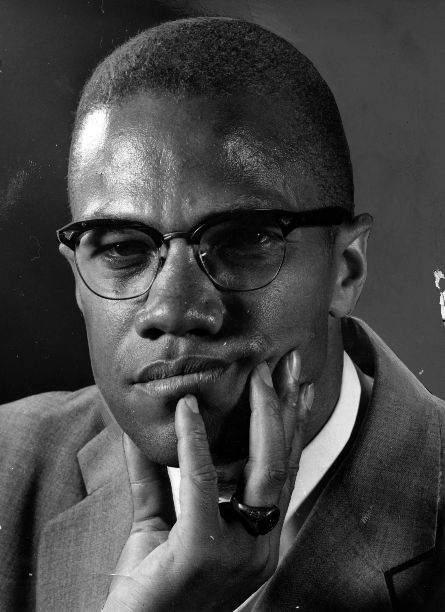

“ I'm for truth, no matter who tells it. I'm for justice, no matter who it is for or against. I'm a human being, first and foremost, and as such I'm for whoever and whatever benefits humanity as a whole. ”
timeline
- 1925
May 19: Malcolm X is born Malcolm Little in Omaha, Nebraska, the fourth of Earl and Louise Little's seven children. Earl, a Baptist minister, is a follower of Marcus Garvey's black nationalism and serves as Omaha chapter president of Garvey's Universal Negro Improvement Association. Louise Little serves as the division secretary.
-
1926
December: The Littles leave Omaha and move to Milwaukee, Wisconsin.
-
1928
The Littles move again, this time to Lansing, Michigan. Settling in a white neighborhood, they are sued for eviction on the basis that a restrictive covenant prevents their home from being sold to any non-Caucasians.
November 7: The Little house is burned to the ground. No fire wagon is dispatched to the scene. Looking back Malcolm believes that a local white supremacist group was behind it.
December: Earl Little moves his family to East Lansing and builds a new home there.
-
1931
September 28: Louise has a premonition about her husband and asks him not to leave the house. Later that night, Earl Little is killed in what police term a streetcar accident, but Malcolm later says that the Ku Klux Klan was behind it. After Earl's death, his wife and children struggle to make ends meet and must apply for public assistance.
- 1938
December 23: Louise Little is diagnosed as mentally ill and sent to the Kalamazoo State Mental Hospital, where she will stay for 26 years.
-
1939:
The state places the Little children with various foster families, and Malcolm, who has been kicked out of school in the seventh grade, is sent to a juvenile home in the nearly all-white community of Mason, Michigan. He does well at school there, earning straight A's and being elected president of his 8th-grade class, but his teacher discourages him about pursuing his goal of becoming a lawyer.
-
1940
Summer: Fifteen-year-old Malcolm visits his half-sister Ella Collins in the Roxbury neighborhood of Boston and is entranced. "I couldn't have feigned indifference if I had tried to," he later says. "I didn't know the world contained as many Negroes as I saw thronging downtown Roxbury at night."
-
1941
February: Ella Collins gains custody of Malcolm and he moves to Boston. Over the next few years, he works a number of odd jobs on railroads, in restaurants and bars, at shoeshine stands, and in a jewelry store. Malcolm learns to dress like a hipster, dyes his hair, and starts hustling in Boston (where he's known as "New York Red"), New York (where the nickname is "Detroit Red"), and Detroit.
-
October 25:Malcolm, who has responded to his draft notice by loudly proclaiming that he wants to "fight for the Japanese" and kill whites, is found mentally unfit for military service and classified 4F.
-
1944
Malcolm has his first run in with the courts. He is sentenced to four months in jail and one year of probation for larceny.
-
1945
December: Malcolm, who has moved back to Boston, goes on a stealing spree with his black friend Malcolm Jarvis and three white women, one of whom he has been dating.
-
1946
January: Malcolm tries to retrieve a stolen $1000 watch from a pawnshop and is arrested and charged with grand larceny, breaking and entering, and firearms possession. He is convicted and, along with Jarvis, receives an eight-to-10-year sentence. The white women have their sentences suspended, but Malcolm's girlfriend serves seven months in prison. The women refused the police suggestion to charge Malcolm and Malcolm Jarvis with rape.
February: At the age of 20, Malcolm is sent to jail in Charlestown, Massachusetts, and assigned prisoner number 22843. He will remain behind bars until 1952.
-
1947
Malcolm meets a fellow convict he calls "Bimbi," who convinces Malcolm to study and learn to develop his mind. In Jarvis' words, in prison "the only way we knew how to rebel was to cram some knowledge into our brains."
-
1948
Malcolm's siblings, four of whom have converted to Islam, introduce him to the words of the Nation of Islam's leader, Elijah Muhammad, who is himself in prison for sedition and violation of the draft laws. The two men correspond, and Malcolm continues his course of study, eventually writing to the Massachusetts governor and demanding the right to practice Islam in prison. He also joins the prison debate team and begins attracting attention for his oratory.
-
1951
Malcolm is denied parole.
-
1952
August 7: Malcolm is released on parole, spends one night with Ella Collins, then goes to Detroit to live with his brother Wilfred. He quickly joins the Nation of Islam and attends meetings at Detroit's Temple No. 1, one of the four temples that the Nation operates at the time. Malcolm rejects the surname "Little" as a slave name given to his family by white oppressors, and he becomes known as "Malcolm X." Dismayed that the Nation of Islam is not attracting more followers (at the time, total nationwide membership was about 400), Malcolm begins an intensive recruiting campaign with Elijah Muhammad's blessing. Soon membership in the Nation begins to soar.
- 1956
Malcolm's future wife Betty Sanders becomes a member of the Harlem Temple and adopts the name "Betty X." They will marry two years later, after Malcolm proposes by phone from a Detroit gas station, and take up residence in East Elmhurst, Queens.
- 1957
April 14: New York Temple member Johnson Hinton is savagely beaten by police. Alerted by other followers, Malcolm joins a contingent of Muslims at the 28th Precinct headquarters in Harlem, where he demands that Hinton receive medical attention. Hinton is eventually taken by ambulance to a nearby hospital, but the Muslims refuse to disperse, which alarms police. Satisfied that his demands have been met, Malcolm disperses the crowd with a wave of his hand. He later sues New York City for police brutality and wins the largest settlement in its history. Media coverage of the Hinton incident brings Malcolm national attention, and the FBI, which has kept a file on Malcolm since 1953, now considers him a "key figure" meriting significant surveillance. Police harassment of Malcolm and his family escalates.
-
1962
April 27: An altercation leads to police entering the Los Angeles Temple and killing its unarmed secretary, Ronald Stokes. "They're going to pay for it," Malcolm declares, and goes to Los Angeles to eulogize Stokes at a funeral attended by 2,000 people. He says the police shot "innocent unarmed Black men in cold blood" and urges action. But Elijah Muhammad resists calls for an aggressive response. An all-white coroner's jury deliberates about Stokes' killing for 23 minutes and terms it "justifiable homicide." By contrast, 14 Nation of Islam members are indicted for assault in the incident and 11 are found guilty.
Later this year, Malcolm confirms that Elijah Muhammad has engaged in repeated adultery and had children with at least three of his young secretaries. "I felt almost out of my mind," Malcolm says.
Herbert Muhammad asks Muhammad Speaks to minimize coverage of Malcolm X.
-
1965
January: Malcolm flies to Los Angeles to meet with Gladys Towles Roots and two Nation of Islam secretaries who are filing paternity suits against Elijah Muhammad.
February 4: Malcolm speaks in Selma, Alabama, at the invitation of the Student Non-Violent Coordinating Committee. He flies to London the next day and is subsequently refused entry into France.
February 13: Malcolm returns from London.
February 14: Malcolm's home in East Elmhurst is firebombed Malcolm X says that it is "upon the orders of Elijah Muhammad." His family is evicted four days later. In Alex Haley's words, "What I was seeing was a man who was valiant beyond belief, whose structural world was tottering, and he was trying to hold it together."
February 21: Malcolm X is assassinated while speaking at an OAAU rally in Harlem; three members of the Nation of Islam are later convicted despite the fact that the assailant apprehended at the scene Talmadge Hayer insisted that his two co-defendants are innocent.
February 27: Actor Ossie Davis leads the funeral service for Malcolm X; 1500 people attend. He is buried at Ferncliff Cemetery in Hartsdale, New York. Later that year, The Autobiography of Malcolm X is published, and Betty Shabazz, who was pregnant at the time of Malcolm's murder, gives birth to his last two daughters.
